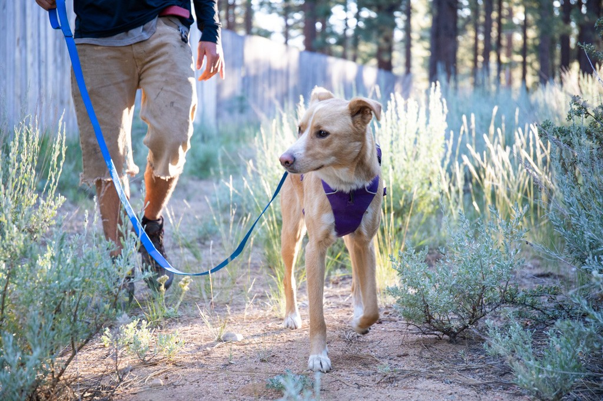

Preparing your home for a dog means more than just buying a bag of food. At PurrPets, we’ve categorized the must-have items to make your dog feel safe and stylish.

Use this table to check off the basics before you bring your new best friend home:
| Category | Must-Have Item | Why You Need It |
|---|---|---|
| Walking | Sturdy Leash & Harness | A harness is often safer for a dog's neck than a standard collar. |
| Sleeping | Orthopedic or Bolster Bed | Provides joint support and a dedicated "safe space" for naps. |
| Feeding | Stainless Steel Bowls | Easier to clean and more durable than plastic or ceramic. |
| Containment | Training Crate | Essential for housebreaking and safe travel in vehicles. |
Not all toys are created equal! Match the toy to your dog's "chew style":
Even if your dog is microchipped, a visible ID Tag on their collar is the fastest way for a neighbor to return them if they ever get lost. Ensure it has your current phone number and the dog's name.